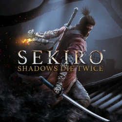
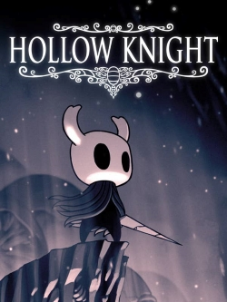

Souls games.
ik ben voor het eerst met dit soort spellen in aanraking gekomen toen Elden Ring uitkwam. het klikte eigenlijk meteeen en sindsdien ben ik veel meer van dit soort spellen gaan spelen.
Elden Ring
Zoals ik net zei, is Elden Ring mijn eerste souls game. Door de hype op het internet besloot ik om het te proberen. De fantastische soundtrack gecombineerd met de echt heel mooie graphics hadden me al snel omgekocht. De boss designs in deze game vind ik ook heel goed gelukt. Heel weinig bosses zien er saai uit.

Sekiro.
Met sekiro ben ik gestart in de zomer. De visuals zijn weer echt extreem goed, maar het combat systeem is hier wat echt het beste is. Ik heb veel gelezen dat dit ook wel beschouwt word als een Rythm game, en opzich ben ik het daar wel mee eens. het blocken van enemy attacks is best wel rythmisch, maar dat maakt het echt heel leuk! Het plot in deze game vind ik ook erg goed en sommige van de endings waren oprecht best wel emotioneel. Ik denk dat dit mn favoriete game is van de makers.
Hollow knight
Hoewel dit ook als platformer bekeken kan worden, leek het me toch leuk bij de souls categorie te zetten. Dit is een soort van metroidvania waar nog best wel souls like combat in zit. met heel veel unieke en mooie areas maakt het het daarom ook leuk om alles te ontdekken. De muziek vind ik het hoogtepunt van de game. Elke area heeft mooie muziek. Ik speel sommige van de stukken uit dit spel ook op piano!
